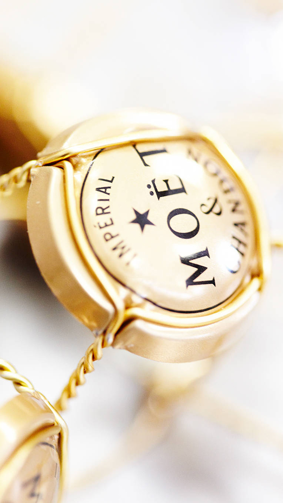
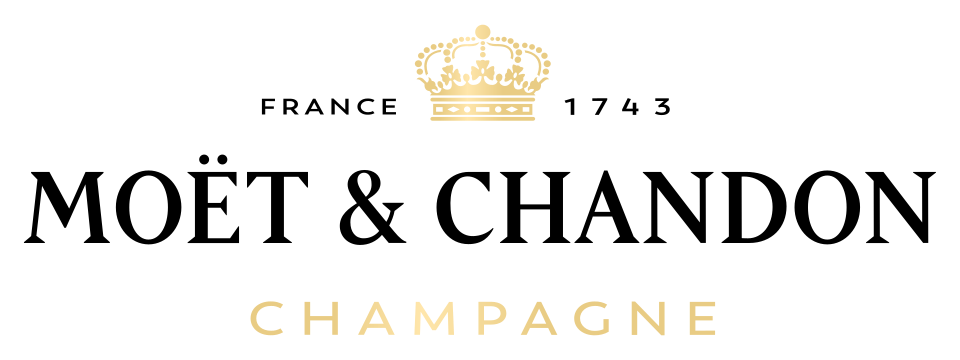

홈 > 브랜드 매거진 > 모엣&샹동
모엣&샹동
모엣&샹동(Moët & Chandon)은 1743년 프랑스 에페르네에서 설립된 세계적인 샴페인 하우스이다.
산업 분야 식음료 · 공개 등급 자료 기반 · 브랜드 평가 4.3 ★


한눈에 보는 브랜드
모엣 & 샹동(Moët & Chandon)은 1743년 클로드 모엣(Claude Moët, 1683~1760)이 프랑스 샹파뉴 지방 에페르네에서 창업한 세계 최대 규모의 샴페인 하우스다. 현재 약 1,190헥타르의 포도밭을 보유하고 연간 3,000만 병 이상을 생산하며, 세계 최대 명품 그룹 LVMH의 와인·증류주 부문을 대표하는 간판 메종으로 자리한다.
돔 페리뇽, 뵈브 클리코 등과 함께 모엣 헤네시 진영에 속해 글로벌 샴페인 시장의 선두를 지킨다.
브랜드 관점
핵심 함의는 모엣이 '규모의 럭셔리'를 구현한 거의 유일한 샴페인이라는 점이다. 같은 LVMH 계열 뵈브 클리코가 노란 라벨의 일관된 우아함으로, 돔 페리뇽이 빈티지 정점의 희소성으로 차별화한다면, 모엣은 연간 3,000만 병 이상을 파는 세계 최다 판매 샴페인으로서 '축하의 보편 언어'를 점한다.
1801년 나폴레옹 보나파르트와 장 레미 모엣의 인연에서 비롯한 임페리얼(Impérial) 헤리티지는 황제의 권위를 대중적 럭셔리로 번역한 서사다. 로저 페더러를 비롯한 셀럽·오스카·그랑프리 마케팅은 이 보편성을 고급 이미지로 끌어올린다.
모엣 헤네시(LVMH 와인·증류주)의 매출 견인차라는 사업적 위상이 핵심이며, 한국에서는 결혼·연말·기념일의 대표 축하주로 인지도가 가장 높은 진입 브랜드로 통한다.
시작과 성장
기원은 1743년, 에페르네의 와인 상인 클로드 모엣이 모엣 에 시(Moët et Cie)를 세워 샹파뉴의 와인을 파리로 실어 나르면서 시작됐다. 루이 15세 시대 스파클링 와인 수요 급증과 맞물려 1746년에는 5만 병을 출하할 만큼 성장했고, 아들 클로드 루이가 합류하며 귀족 고객층을 넓혔다.
창업자의 손자 장 레미 모엣은 1801년부터 나폴레옹 보나파르트에게 샴페인을 공급했고, 1807년 황제가 에페르네 셀러를 방문하며 인연이 깊어졌다. 1833년 장 레미의 사위 피에르 가브리엘 샹동 드 브리아유가 동업자로 합류하면서 상호가 모엣 & 샹동으로 바뀌었다.
1869년에는 나폴레옹과의 유대를 기려 '브뤼 임페리얼'을 출시했고, 1937년 돔 페리뇽 브랜드를 인수했다. 이후 1971년 헤네시와 합병하고 1987년 루이뷔통과 결합해 LVMH 체제로 편입되며 오늘에 이른다.
브랜드 아이덴티티
정체성의 축은 황제의 권위를 누구나 누리는 축하로 번역하는 데 있다. 로고는 1743년 도입돼 두 세기 넘게 이어진 흑·금 조합으로, 임페리얼 왕관과 별이 상징의 핵심이다.
라벨 하단의 별은 1807년 무렵부터 등장해 업계 선두를 표시한다. 임페리얼이라는 이름은 나폴레옹 헤리티지에서 나온 핵심 자산이며, 'Be Fabulous'라는 보이스는 화려하고 사교적인 축하의 무드를 전한다.
타깃은 입문자부터 셀럽까지 폭넓으며, 권위와 접근성을 동시에 거머쥔 대중적 럭셔리를 지향한다.
제품과 서비스
대표 제품은 논빈티지 '모엣 임페리얼(브뤼)'로 피노 누아·피노 뮈니에·샤르도네를 블렌딩한 입문 기준점이다. 핑크빛 '로제 임페리얼'과 더 달콤한 '넥타 임페리얼'이 축하·파티 수요를 잡는데, 넥타 임페리얼 로제는 750밀리리터 한 병이 미국 소매가 기준 약 9만 원대에 형성된다.
상위로는 빈티지 그랑 뱅티지가 있다. 백화점·면세·레스토랑·온라인 등 광범위한 채널로 유통된다.
현재 상태
모회사는 세계 최대 명품 그룹 LVMH로, 와인·증류주 부문인 모엣 헤네시가 메종을 운영한다. 본사와 셀러는 창업지인 프랑스 샹파뉴 지방 에페르네에 있다.
메종 단위의 별도 매출·영업이익 등 상세 재무 수치는 공식적으로 미공개다.
타임라인
BI/CI 변천사

대표 로고대표 브랜드 마크함께 읽을 브랜드
돔 페리뇽(Dom Pérignon)은 프랑스 모엣 샹동이 생산하는 빈티지 프레스티지 퀴베 샴페인 브랜드이다.
맥도날드는 가장 평범한 소비재를 세계 어디서나 읽히는 대중문화의 기호로 바꾼 브랜드다. 햄버거와 감자튀김은 단순한 메뉴지만, 맥도날드는 속도, 표준화, 접근성, 익숙...
KFC(Kentucky Fried Chicken)는 할랜드 샌더스 대령이 창립한 미국 기반의 글로벌 프라이드 치킨 프랜차이즈이다.
BI
비비고
식음료 · 자료 기반비비고비비고(bibigo)는 CJ제일제당이 2010년 출시한 글로벌 한식 브랜드로, 만두·김치·즉석밥·한식 소스 등 100여 종의 한국 식품을 약 70개국에서 판매한다.
 식음료 · 매거진 완성스타벅스
식음료 · 매거진 완성스타벅스스타벅스는 커피를 팔면서 동시에 사람들이 머무는 시간과 공간의 감각을 설계한다. 음료는 핵심 상품이지만, 브랜드의 차별성은 매장 안에서 보내는 시간, 주문 언어, 조...
 식음료 · 매거진 완성코카-콜라
식음료 · 매거진 완성코카-콜라코카-콜라는 음료의 맛보다 함께 마시는 순간의 감정을 브랜드 자산으로 축적해 왔다. 병의 형태, 색, 광고 언어, 공유의 장면이 반복되면서 제품은 탄산음료를 넘어 친...
네슬레(Nestlé)는 스위스 브베에 본사를 둔 세계 최대 규모의 식음료 다국적 기업이다.
버거킹는 미국의 식음료 브랜드로, 맛, 메뉴 구성, 패키지, 매장 또는 유통 채널이 함께 브랜드 경험을 만드는 영역입니다.